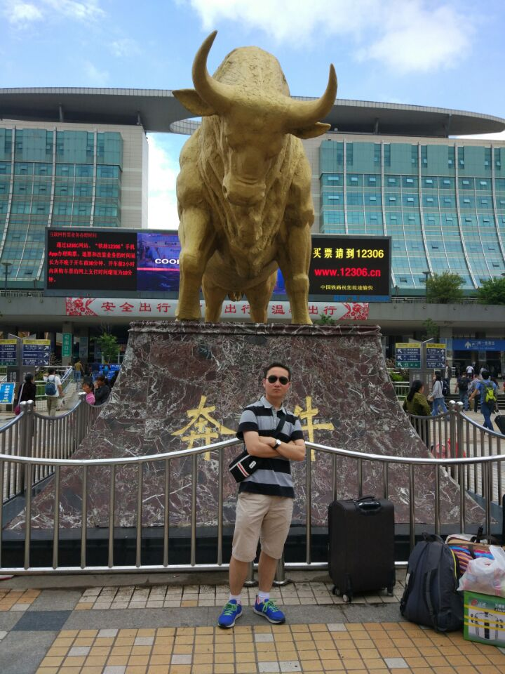

Linyu Li

Ph.D. candidate at PKU -- Peking University,
Beijing, China
[Researchgate] [Google Scholar] [ORCID]
Email: xltx_youxiang@qq.com or linyuli@stu.pku.edu.cn
General
I am currently a Ph.D. candidate at the School of Computer Science, Peking University, pursuing a doctoral degree in Computer Science and Technology. My Ph.D. advisor is Professor Jin Zhi. Prior to this, I completed a three - year postgraduate program at Yunnan University, obtaining my master's degree under the supervision of Professor Xuan Zhang.
My research interests mainly revolve around utilizing deep learning to address various issues related to knowledge graphs. This includes knowledge graph completion, multimodal knowledge graphs, and various downstream applications of knowledge graphs (AI-4-Science). Additionally, I am also interested in requirements engineering in software engineering.
In my personal life, I enjoy fitness, soccer, and other sports. I aspire to become a university assistant professor after completing my Ph.D. You can find more information about me on platforms such as Researchgate and ORCID.
Research Interests
Knowledge Graph Completion/Representation Learning、 Applications of Knowledge Graphs、 Deep Learning and requirements Engineering.
News
- [2026.01] One paper has been accepted by TheWebConf (WWW'2026).
- [2026.01] One paper has been accepted by ICASSP'2026.
- [2026.01] One paper has been accepted by Computers and Electronics in Agriculture (COMPAG).
Selected Publications [Full List]
-
LinYu Li, Zhi Jin*, Yuanpeng He, Dongming Jin, Yichi Zhang, Haoran Duan,Xuan Zhang, Nyima Tashi. Learning to Evolve: Bayesian-Guided Continual Knowledge Graph Embedding.
The Web Conference (WWW'2026 CCF-A ).
-
LinYu Li, Zhi Jin*, Xuan Zhang, Haoran Duan, Jishu Wang, Zhengwei Tao, Haiyan Zhao, Xiaofeng Zhu. Multi-view Riemannian Manifolds Fusion Enhancement for Knowledge Graph Completion.
IEEE Transactions on Knowledge and Data Engineering 2025 (SCI,JCR Q1 Top, CCF-A, IF: 8.9).
-
LinYu Li, Zhi Jin*, Yichi Zhang, Dongming Jin, Chengfeng Dou, Yuanpeng He, Xuan Zhang, Haiyan Zhao. Towards Structure-aware Model for Multi-modal Knowledge Graph Completion.
IEEE Transactions on Multimedia 2025 (SCI,JCR Q1 Top, CCF-B, IF: 8.6).
-
LinYu Li, Zhi Jin*, Yuanpeng He, Dongming Jin, Haoran Duan, Zhengwei Tao, Xuan Zhang, Jiandong Li. Rethinking Regularization Methods for Knowledge Graph Completion.
ArXiv preprint 2025.
-
LinYu Li, Xuan Zhang*, YuBin Ma, Chen Gao, JiShu Wang, Yong Yu, Zihao Yuan, QiuYing Ma. A knowledge graph completion model based on contrastive learning and relation enhancement method.
Knowledge-Based Systems 2022 (SCI,JCR Q1 Top, CCF-C, IF: 8.8).
-
LinYu Li, Xuan Zhang*, Zhi Jin, Chen Gao, Rui Zhu, YuQin Liang, YuBin Ma. Knowledge Graph Completion Method Based on Quantum Embedding and Quaternion Interaction Enhancement.
Information Sciences 2023 (SCI,JCR Q1 Top, CCF-B, IF: 8.1).
-
HaoRan Duan, Cheng Xie*, LinYu Li. Reserving-Masking-Reconstruction Model for Self-Supervised Heterogeneous Graph Representation
Proceedings of the 30th ACM SIGKDD Conference 2024 (CCF A)
-
Zhang Hongcheng, Li Linyu, Yang Li, San Chenjun, Yin Chunlin, Yan Bing, Yu Hong, Zhang Xuan*. Knowledge graph completion method based on contrastive learning and language model enhanced embedding.
Computer Engineering 2023 (Chinese Core, EI, CCF-B, First finisher)
Academic Services
-
Reviewer for AAAI 2026, CVPR 2026, ICASSP 2026, ICME 2026
Reviewer for NeurIPS 2025, ACM MM 2025, ICLR 2025, ICME 2025, ACM Multimedia Asia 2025, IJCNN 2025
Reviewer for NeurIPS 2024 Workshop
Reviewer for Artificial Intelligence (AI)
Reviewer for Knowledge-Based Systems (KBS)
Reviewer for Information Sciences (INS)
Reviewer for Engineering Applications of Artificial Intelligence (EAAI)
Reviewer for Neural Networks (NN)
Reviewer for Neurocomputing
Reviewer for Expert Systems With Applications (ESWA)
Reviewer for Big Data Research (BDR)
Reviewer for Future Generation Computer Systems (FGCS)
Reviewer for Pattern Recognition (PR)
Reviewer for Information Processing and Management (IPM)
Reviewer for Applied Soft Computing Journal (ASOC)
Reviewer for Knowledge and Information Systems (KAIS)
Reviewer for International Journal of Machine Learning and Cybernetics (IJMLC)